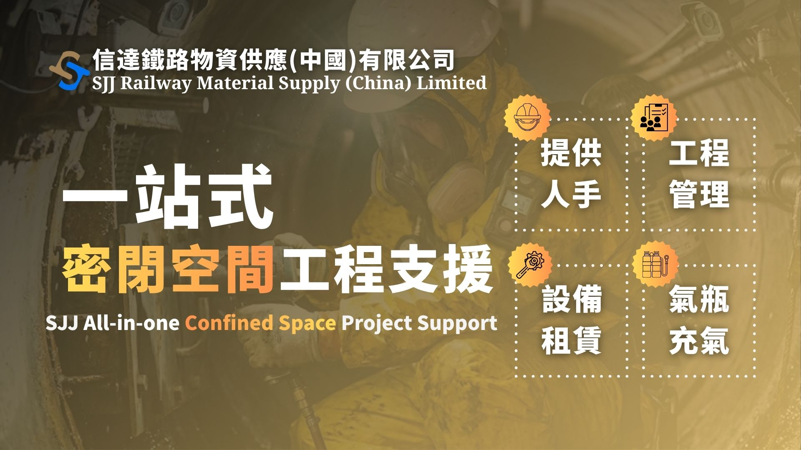
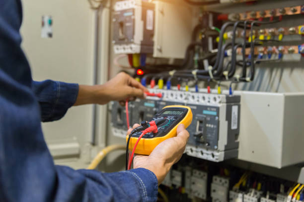

Established in 2000, Cinda has provided continuous support to the railway, public transport, airport, building services, and other engineering sectors in Hong Kong and overseas markets for over two decades. The company's services cover material supply, product procurement, import and export, technical consulting, design-related coordination, and project-based engineering support.
In light of the new guidelines introduced in Hong Kong regarding enclosure works, Cinda is now providing relevant equipment and manpower support services. Please click here for more information:


為鐵路、公共交通及相關基建工程提供項目所需物料及產品支援，協助項目團隊處理規格、供應及交付安排。

配合密閉空間(或稱受限空間)下的設備操作、現場安全要求及工程支援安排。

提供技術資料、測試及實際使用協助；提供產品尋源及進出口安排、設計項目制供應鏈支援。